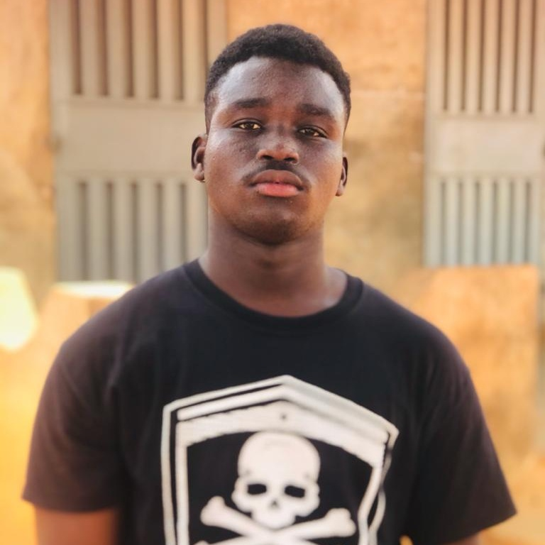

curriculum vitæ

Etat civil
AYELODJOU-YEBE
Edoawan, Modèle
sexe: Masculin
Nationalité : Béninois
02 BP....Abomey - calavi
00229 99094281
modelepaulayelodjouyebe@gmail.com
Formation académique
o
- juillet 2020 Baccalauréat D Complexe la grande Académique
- juillet 2017 Brevet d'Etudes du Premier Cycle Moderne court Collège catholique de La Salle
- juin 2013 Certificat d'Etudes Primaire Abbé Florent Nacsimento
Activités professionnelle
Expérience Para professionnelle
Capacité l'ingustique atout et loisir
- Maîtrise courante du français à l'écrit et à l'oral
- Maîtrise courante du fon à l'oral
- Maîtrese moyenne de l'anglais à l'écrit
- Maîtrise de l'outil informatique
- Passionné de voyages, de musique (slame), de sport et d'art culinaire
je certifie sur l'honneur l'exactitude et la sincérité des renseignements ci-dessus
Fait à Akassato ,le Mardi 19 janvier 2022
E. Modèle AYELODJOU-YEBE
CV
Aller vers le projet